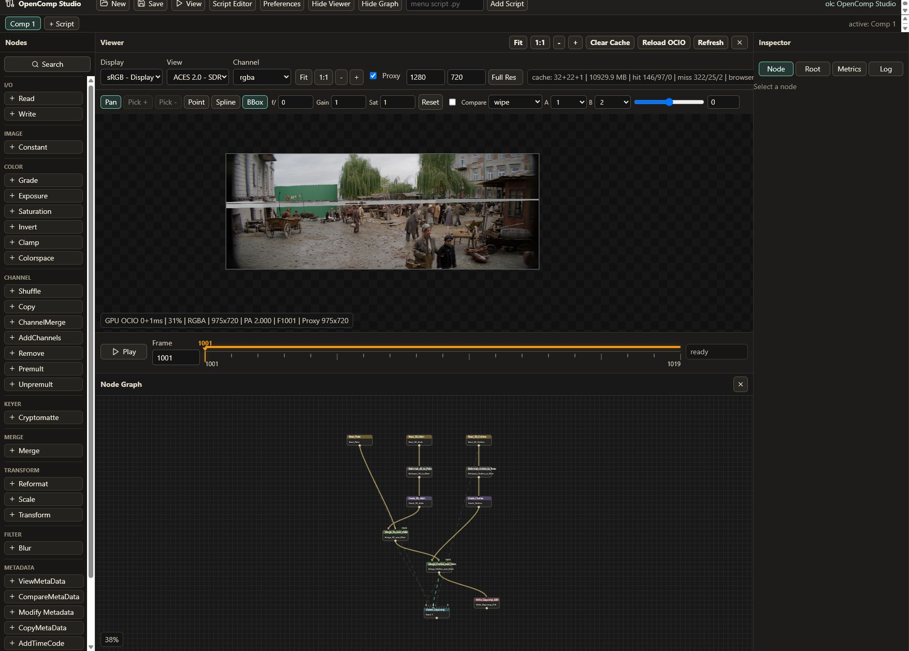

Local node-based compositor prototype
OpenComp Studio
A browser UI and Python backend for EXR/ACES/OCIO compositing workflows, with a Nuke-like node graph, GPU-assisted viewer, Python script editor, and in-memory render/cache engine.
FastAPI
NumPy
OpenEXR
OpenColorIO
React
WebGL2

Read First
1. Introduction
What the app is, current workflow, UI structure, and feature state.
2. NodesNode catalog, graph model, evaluation contract, and how to add nodes.
3. ArchitectureImage processing, I/O, OCIO, caching, threading, WebGL viewer, and limits.
4. CLIHeadless `.opencomp` scripts, Python automation, metadata inspection, and Write-node renders.
Processing Overview
Read
EXR/PNG/JPG to float RGBA and metadata.
EXR/PNG/JPG to float RGBA and metadata.
Evaluate
Demand-driven backend graph traversal.
Demand-driven backend graph traversal.
Cache
Node frames, float previews, final previews.
Node frames, float previews, final previews.
Stream
Float16 tiles or PNG fallback.
Float16 tiles or PNG fallback.
Display
WebGL viewer process plus OCIO shader.
WebGL viewer process plus OCIO shader.
Current Performance Notes
float16 tiles
Default GPU viewer transport over WebSocket.
10 GB
Default frontend viewer cache target, capped at 64 GB.
CPU graph
Node processing is currently NumPy/Pillow/OpenEXR on CPU.